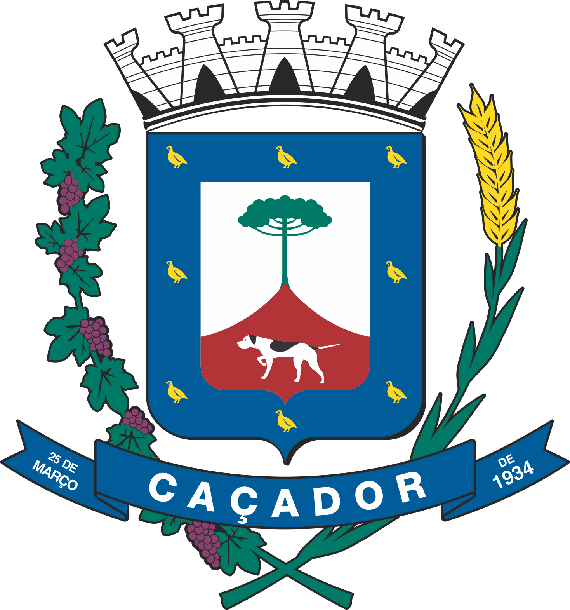

Uma iniciativa estratégica para diagnosticar, planejar e implementar soluções de moradia digna, sustentável e acessível para toda a população caçadorense.
O Plano Habitar Caçador é o instrumento técnico e participativo que orienta as políticas públicas de habitação de interesse social no município, integrando planejamento urbano, inclusão social e desenvolvimento econômico.
Garantir que as famílias de Caçador tenham acesso a moradias seguras, com saneamento básico, energia e infraestrutura urbana adequada.
Legalizar áreas urbanas consolidadas, concedendo aos moradores a escritura definitiva de seus imóveis e segurança jurídica.
Fomentar parcerias e modelos de financiamento que reduzam o impacto do aluguel na renda familiar dos trabalhadores e estudantes.
Direcionar a expansão habitacional da cidade de forma sustentável, alinhada às necessidades do setor produtivo e das indústrias locais.
Conheça o cronograma completo de execução do plano, com as etapas de diagnóstico, escuta comunitária, diretrizes e metas de curto, médio e longo prazo.
O plano foi desenhado para atender diferentes realidades do nosso município.
Em busca do sonho da casa própria ou regularização do seu lote
Que necessitam de aluguel acessível e próximo ao trabalho
Que se mudam para Caçador e precisam de moradia estudantil viável
Favorecidas pela atração e fixação de mão de obra na cidade
Responda à nossa pesquisa habitacional e ajude a gestão pública a mapear as reais necessidades da população caçadorense.